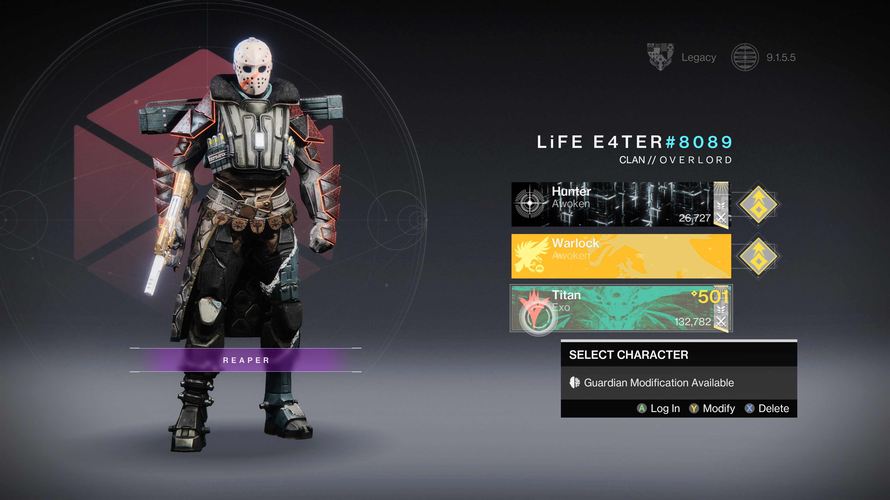
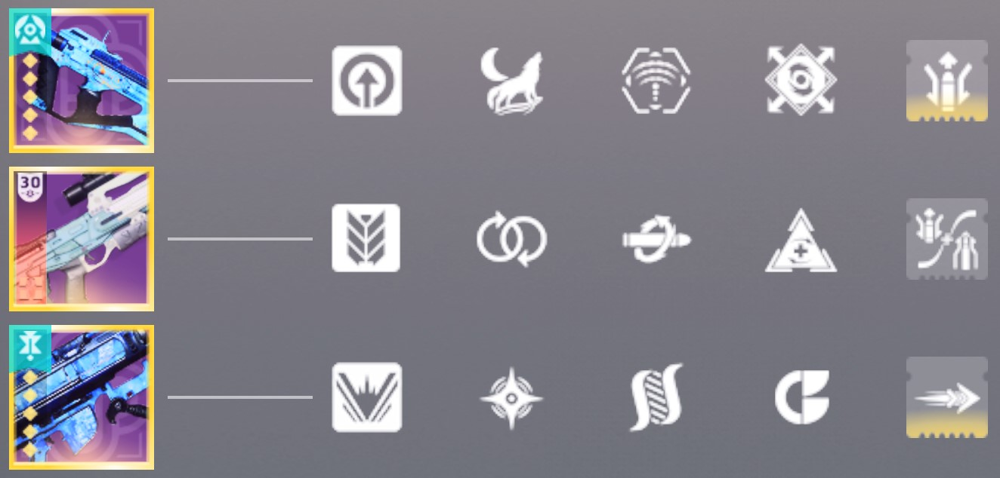
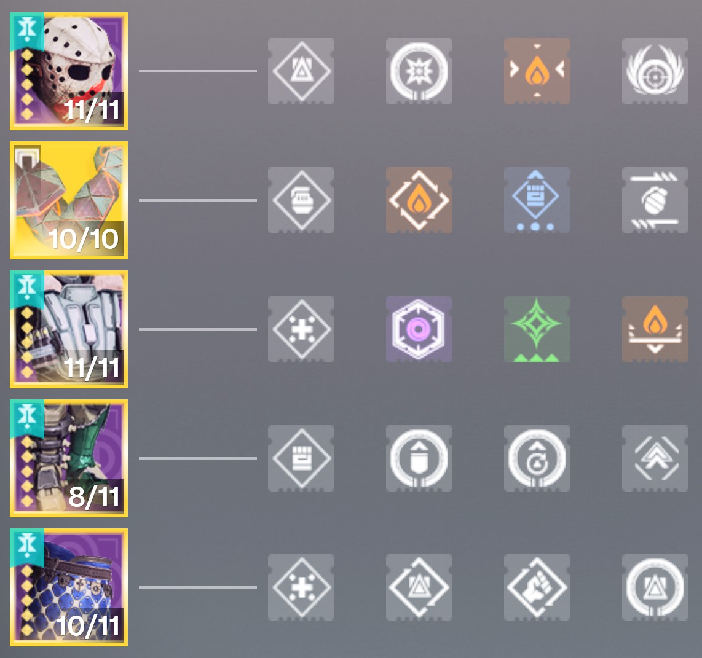

PVP Build: Prismatic Titan
This Prismatic Titan build is designed for aggressive, mid-range domination in PvP by focusing on constant ability uptime, immediate health recovery, and punishing enemy close-quarters engagement. It leverages the Prismatic subclass to combine the defensive utility of Stasis/Strand with the offensive power of Arc
My Guardian in Full Gear
PvP Gameplay
Strengths of This Build
- Dominates close to mid-range battles
- Constant ability uptime
- Excellent survivability through health regen
- Constant ability uptime
- Very strong orb generation
- With ACD/0 Feedback Fence enemies explode when meleeing you
Recommended Subclass, Abilities, Aspects & Fragments

Subclass:
- Prismatic Bladefury
Abilities:
- Rally Baricade: Creates a small barrier to peak over while aiming down sights; increases weapon reload speed, stability, and range. Draws hostile fire when you stand behind it.
- Shiver Strike: Hold input to leap through the air. Releasing input unleashes a powerful dash attack that knocks targets back and attaches a delayed Stasis explosive to them
- Pulse Grenade: A grenade that periodically damages targets within its explosive radius
Aspects:
- Knockout Critically wounding a target or breaking their shield infuses your melee attacks with Arc energy and increases melee range for a short duration. Defeating targets with melee attacks makes you amplified and restores a portion of your health.
- Drengr's Lash: Activate your Barricade ability to create a ripple that travels forward, suspending and damaging the targets it hits
Fragments:
- Facet of Protection: While surrounded, you are more resilient to incoming damage
- Facet of Blessing: Melee final blows start health regeneration
- Facet of Courage: Your Arc, Solar, and Void abilities deal increased damage to targets afflicted with darkness debuffs
- Facet of Hope: While you have an elemental buff, your class ability regenerates more quickly
- Facet of Honor: Collecting an elemental pickup or destroying a Tangle grants Transcendence energy of the same type
Weapon Loadout
Kinetic Weapon:
- Gunburn with Target Lock: Damage increases by an improved amount the longer this weapon remains on target
Energy Weapon:
- BxR-55 Battler with Kill Clip: Reloading after defeating a target grants increased damage for an improved duration
Heavy Weapon:
- Haliatus with Cluster Bomb: Rockets spawn cluster bombs upon detonation. Blast radius is increased
Armor Mods
Helmet Mods:
- Kinetic Siphon: Kinetic weapon final blows create an Orb of Power
- Solar Targeting: Improved target acquisition, accuracy, and aim-down-sights speed for Solar weapons
- In-Flight Compensator: Increases the airborne effectiveness of all equipped weapons
Exotic Arms:
- ACD/0 Feedback Fence Melee hits grant Armor Charge, and you take less melee damage while you have Armor Charge. Taking melee damage causes you to emit a burst of damaging Arc energy that jolts targets, consuming your Armor Charge and dealing more damage based on the number of stacks consumed.
Arm Mods:
- Solar Loader: Increases reload speed of Solar weapons
- Melee Font: Collecting an Orb of Power causes you to gain 1 temporary Armor Charge. You gain a bonus to your melee stat while you have any Armor Charge. Your Armor Charge decays over time
- Fastball: Increases grenade throw distance
Chest Mods:
- Resistance Mods: change depending on combatant’s damage type
- Charged Up: Increases the maximum number of stacks of Armor Charge you can carry by 1
- Unflinching Solar Aim: Reduces flinching from incoming fire while aiming a Solar weapon
Leg Mods:
- Better Already: Your health begins to regenerate immediately after picking up an Orb of Power
- Absolution: Reduces all ability cooldowns each time you pick up an Orb of Power
- Enhanced Athletics increases movement speed and jump height
Mark Mods:
- Reaper: shortly after using your class ability, your next weapon final blow spawns an Orb of Power
- Outreach: Reduces melee cooldown when using your class ability
- Distribution: reduces all ability cooldowns when using your class ability near targets
How This Build Works
- Punish pushing opponents by dropping Rally Barricade to suspend them, giving you a free kill
- Melee kill to acticate Knockout, infusing your melee with Arc and increasing range.
- Melee kills also provide Orbs of Power and Armor Charge which is when ACD/0 shines
- Push aggressively with Shiver Strike, if enemy melees you they explode because of ACD/0's perk
- Instantly heal yourself with health regeneration on melee kills and orb pickup
- Drop Rally Barricade before damage phases to generate an Orb of Power and boost weapon stats